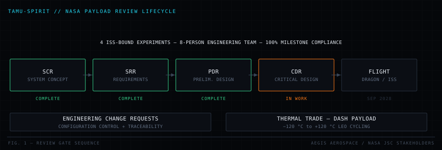

Home / Projects / PRJ-06 TAMU-SPIRIT
TAMU-SPIRIT
ISS PAYLOAD · SYSTEMS ENGINEERING · NASA DESIGN REVIEWS
Systems-engineering work performed for four experiments targeting a September 2028 International Space Station launch, within an internal professional programme. This case study focuses on approved process, responsibilities, and milestone context; proprietary analyses, review packages, and hardware records are not public.

00Evidence boundary
What can be shown: role scope, systems-engineering methods, review-gate sequence, and approved milestone information.
What cannot be shown: internal requirements matrices, ECR logs, thermal models, review packages, hardware imagery, and programme-specific result data.
Evidence source: professional programme record and approved portfolio language. There is no public project repository. The public PACT-Controls repository is a separate academic controls project and is not evidence for TAMU-SPIRIT.
▶Trade the thermal pair against the gate
Pick a material pair for the payload interface and sweep it across the declared LEO cycling band, then step the review gate to see which requirement themes have to be closed by then.
This model needs JavaScript. Everything it demonstrates is described in the sections below.
01Problem
Hardware that flies to the International Space Station is not judged only on whether it works. It is judged on whether the programme can demonstrate, at a government review board, that every requirement is traceable to a verification method, that every change since the last review has been assessed and dispositioned, and that the design closes against the environment it will actually see.
A student team can build competent hardware and still fail that bar entirely, because the failure mode is not technical, it is a requirement nobody owns, a change nobody recorded, or an analysis whose assumptions nobody wrote down. With four experiments, eight engineers, and a target of a Sep 2028 SpaceX Dragon launch, the coordination problem is the engineering problem.
Problem statement. Carry four ISS-bound experiments through NASA design review gates with complete requirement traceability and change control, while closing the thermal design against the low Earth orbit environment.
02Public-level requirement themes
This table summarizes requirement categories at a portfolio-safe level; it is not the internal programme requirements matrix.
| ID | Requirement | Driver | Verification |
|---|---|---|---|
| SP-001 | Payload shall survive the LEO thermal cycling environment | −120 °C to +120 °C | Thermal analysis + test |
| SP-002 | Payload shall meet launch vehicle structural and interface requirements | Dragon manifest | Analysis + interface review |
| SP-003 | All requirements shall be traceable to a verification method | NASA review standard | Traceability matrix audit |
| SP-004 | Design changes shall be dispositioned through a formal ECR process | Configuration control | ECR log review |
| SP-005 | Programme shall satisfy each review gate on schedule | SCR, SRR, PDR | Board disposition |
| SP-006 | Quality documentation shall be maintained across all four experiments | 8-person team | Document control audit |
03Publicly describable constraints
- Thermal cycling. −120 °C to +120 °C across the orbital day/night cycle, repeated for the duration of the mission.
- Launch environment. Vibration, acoustic and quasi-static loading from the Dragon ascent.
- No servicing. Once it is up there, nothing gets adjusted.
- Fixed manifest date. Sep 2028 launch, the schedule is not the variable.
- Government review gates. Progress is gated on board disposition, not on internal opinion.
- Distributed team. Four experiments, eight engineers, one configuration baseline.
- Compliance regime. NASA and DCMA documentation standards apply.
04Review lifecycle
Each gate answers a different question, and answering them out of order is the classic way to lose a year: SCR asks whether the concept is sound, SRR asks whether the requirements are complete and verifiable, PDR asks whether the design closes against them, and CDR asks whether it is ready to be built.

| Gate | Question answered | Primary artefacts | Status |
|---|---|---|---|
| SCR | Is the concept viable and worth resourcing? | Concept description, feasibility rationale | Complete |
| SRR | Are the requirements complete, consistent and verifiable? | Requirements set, traceability matrix, verification methods | Complete |
| PDR | Does the design close against the requirements? | Design description, analyses, interface definitions, risk register | Complete |
| CDR | Is the design ready to build? | Detailed drawings, full analysis set, verification plan | In work |
05Systems engineering process
Requirement traceability
Every requirement carries a parent, a verification method and an owner. The matrix is the artefact a review board actually interrogates, because an orphaned requirement is either unnecessary or is the one that will be missed.
Engineering change requests
Every change to a baselined item goes through an ECR: what is changing, why, what it affects, who assessed it, and what the disposition was. The discipline exists because on a distributed team the expensive failure is not a bad change, it is a good change that two other subsystems never heard about.
- Impact assessment against interfaces, mass, power, thermal and schedule before disposition.
- Traceability from the change back to the requirement it affects and forward to the re-verification it triggers.
- Closure record so the review board can see the full change history since the last gate.
06Thermal trade, DASH payload
The DASH payload's dominant risk was thermal. In low Earth orbit a payload passes through the terminator roughly every 45 minutes, and the resulting cycling drives two distinct failure mechanisms: instantaneous stress from differential expansion between dissimilar materials, and cumulative fatigue over thousands of cycles.
The trade was resolved on CTE compatibility rather than on any single material's absolute performance: a joint between two materials that expand at different rates generates stress every orbit regardless of how good either material is on its own. Material selection plus thermal analysis across the full band reduced the design risk carried into PDR.
07My contribution
The statements below are the approved public summary of professional responsibilities and programme status.
- Maintained the programme's reported 100% milestone compliance for four ISS-bound experiments targeting the Sep 2028 SpaceX Dragon launch.
- Managed engineering change requests and NASA compliance tracking through SCR, SRR and PDR government design reviews.
- Reduced thermal design risk for DASH by performing material selection trades and thermal analysis across the −120 °C to +120 °C LEO cycling environment.
- Coordinated quality documentation across an eight-person engineering team, advancing the project toward late-2026 hardware manufacturing.
08Verification & validation approach
Verification method is assigned when the requirement is written, not when the hardware exists. Assigning it late is how programmes discover that a requirement is untestable after the design is frozen.
| Method | Applied to | Why |
|---|---|---|
| Test | Thermal cycling survival, structural qualification | Environmental response cannot be argued, only demonstrated |
| Analysis | Thermal gradients, launch loads, margins | Covers conditions that cannot be reproduced affordably on the ground |
| Inspection | Dimensional conformance, workmanship, documentation | Direct observation is sufficient and cheapest |
| Demonstration | Operational sequences, crew interaction | Function is observable without instrumentation |
09Approved programme status
- SCR, SRR and PDR government design reviews satisfied on schedule, with CDR in work.
- Thermal design risk on DASH reduced from a top programme risk to an analysed and dispositioned item.
- Configuration baseline maintained across four experiments with a complete, auditable change history.
- Programme advanced toward late-2026 hardware manufacturing.
These status statements come from the internal programme record. The underlying board dispositions, matrices, and analysis files are proprietary and are not linked from this site.
10Engineering tradeoffs
| Tradeoff | Gained | Paid |
|---|---|---|
| Formal ECR process on a student team | Auditable baseline, no silent divergence between subsystems | Real overhead per change, unpopular until the first change that would have broken an interface |
| Verification method assigned at requirement authoring | No untestable requirements survive to CDR | Slower requirements phase |
| CTE compatibility over single-material optimisation | Lower cyclic stress at the joints | Rules out otherwise attractive materials on their individual merits |
| Analysis-heavy risk reduction before PDR | Risk retired early, when changes are still cheap | Front-loaded analysis effort before hardware exists to check it against |
11Challenges
Four experiments, one baseline
Each experiment had its own team, its own priorities and its own idea of what "done" meant. Holding a single configuration baseline across all four is the work that does not appear in any technical drawing and determines whether the programme passes its next gate.
Compliance as engineering, not paperwork
The temptation on a student programme is to treat NASA documentation requirements as bureaucracy wrapped around the real work. They are not: the traceability matrix is a completeness check on the requirement set, and the ECR log is a coupling analysis of the design. Treating them as engineering artefacts is what made the reviews pass.
A launch date that does not move
A Sep 2028 manifest slot converts every schedule decision into a technical one. Scope, margin and verification depth are the variables; the date is not.
12Lessons learned
- An untraceable requirement is an unverified requirement. If nobody can say how it will be shown to be met, it will not be met.
- Change control is coupling analysis. The ECR process exists because subsystems are coupled and people are not.
- Thermal failures are joint failures. The stress comes from constraint and CTE mismatch, not from the temperature itself.
- Review gates are a forcing function. A hard external date exposes the assumptions a team has been carrying without noticing.
- Systems engineering is a technical discipline. The artefacts are analyses, not administration.
13Forward work
- Complete CDR: detailed drawings, full analysis set, and the verification plan for each experiment.
- Begin hardware manufacturing in late 2026 against the released configuration.
- Execute the environmental qualification campaign, thermal cycling and structural qualification.
- Close the verification matrix item by item through to flight acceptance.
- Support integration into the Sep 2028 Dragon manifest.
14Public evidence
Programme-specific design detail and artifacts are withheld under the internal release boundary. The illustrations on this page explain process and lifecycle only; they are not programme drawings or result plots.
Nothing on this page should be interpreted as a public release of partner, NASA, DCMA, experiment-team, or launch-provider documentation.